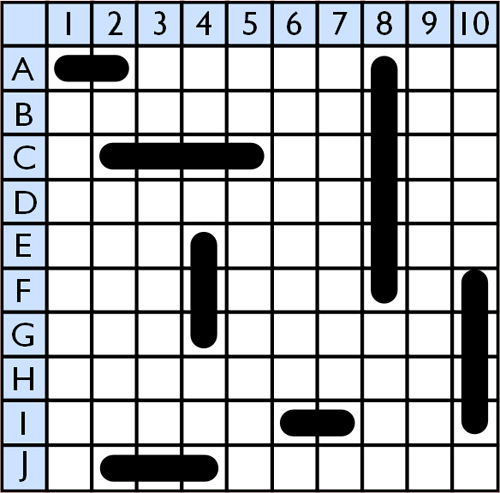

Battleship
Game Description
- Players: 2
- Objective: Players take turns "attacking" the other players ships by calling out a tile on the grid. The tile is marked either a hit or miss. Each ship has a different number of times it can be hit.
- How to Win: One player wins when all the other players ships are sunk.
How to Play Battleship
Explanation of the game's rulesDiagram of the Game Board

Image Credit to battleshiponline.org
Updated Software Design
Model
Objects
Game: Holds all the other objects in the game.
PlayerShips: Holds the placement of each of the Player's ship Arrays.
ComputerShips: Holds the placement of each of the Computer's ship Arrays.
PlayerGuesses: Holds the guesses that the player has made and marks them hit or miss.
ComputerGuesses: Holds the guesses that the computer has made and marks them hit or miss.
Arrays
playerCarrier: An array containing the 5 coordinates of the Player's Carrier.
playerBattleship: An array containing the 4 coordinates of the Player's Battleship.
playerCruiser: An array containing the 3 coordinates of the Player's Cruiser.
playerSubmarine: An array containing the 3 coordinates of the Player's Submarine.
playerDestroyer: An array containing the 2 coordinates of the Player's Destroyer.
computerCarrier: An array containing the 5 coordinates of the Computers's Carrier.
computerBattleship: An array containing the 4 coordinates of the Computers's Battleship.
computerCruiser: An array containing the 3 coordinates of the Computers's Cruiser.
computerSubmarine: An array containing the 3 coordinates of the Computers's Submarine.
computerDestroyer: An array containing the 2 coordinates of the Computers's Destroyer.
(For ship Arrays each coordinate will be stored as an Object with an x and y value. Example [{"x": 1, "y": "C"}, {"x": 2, "y": C}])
Functions
generateAndPlaceShips: initializes the Game object and all the ships
createGridArray: generates the 2D array used for the grid
The following functions have not yet been implemented because they pertain to updating the model
placeShip(ship, position): will place a ship on the game board
markHit(x, y): marks a coordinate as a hit
markMiss(x, y): marks a coordinate as a miss
markSunk(ship): marks a ship as sunk
computerAttack(): randomly chooses a coordinate to attack
playerAttack(): gets the coordinate the player chooses to attack
View
Functions
init: calls the necessary functions to initialize the Game object and view
initializeGrid: puts the necessary HTML in the 2D Grid Array
addShipsToGrid: adds the ships from the playerShips Object to the Grid
displayGrid: puts all the HTML together to display the player grid